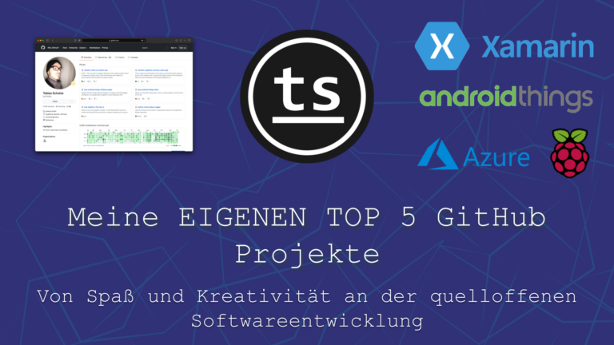

Seit sehr sehr vielen Jahren versuche ich die frohe Botschaft des Software Engineerings zu verbreiten. Für mich ist es eine ideale Kombination aus Kreativität und Logik. Aus Denken und an dem Erschaffenen zu erfreuen.
Aus diesem Grund pflege ich seit geraumer Zeit ein GitHub Profil mit einer Menge an frei zugänglichen Quelltexten.

Da ich mich selbst nicht immer an alles erinnern kann habe ich mich zu diesem Video entschlossen.
Ich möchte euch in einem YouTube Video einmal meine TOP 5 meiner GitHub Projekte vorstellen – angefangen von meiner Studienzeit bis zu den aktuell laufenden Projekten.
Die meisten dieser Projekte sind für mich abgeschlossen und es findet keine weitere Entwicklung statt. Dies ist das Schöne wenn man in seiner Freizeit entwickelt. Man kann aufhören wenn man denkt es sei fertig oder es einfach keinen Spaß mehr macht. Anders als im Beruf gibt es hier keine Kunden, keine Wartungsverträge sondern einfach nur den Spaß an der Freude.
Nach Zeit:
Aus diesen Erfahrungen bin ich nun um so mehr gespannt was in den nächsten zehn Jahren so ansteht, in welche Richtung sich meine Interessen verschieben und was sich einfach so in dieser Zeit in der Technik noch so verändert. Es bleibt also spannend.
Back